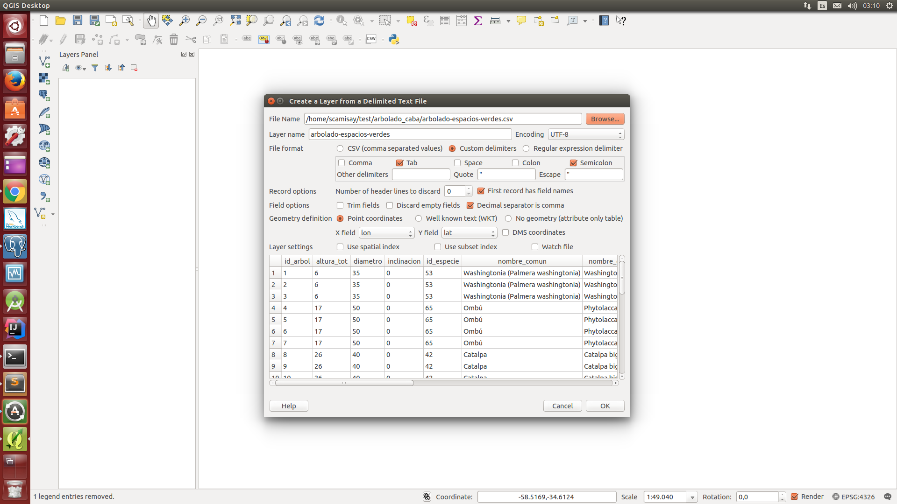
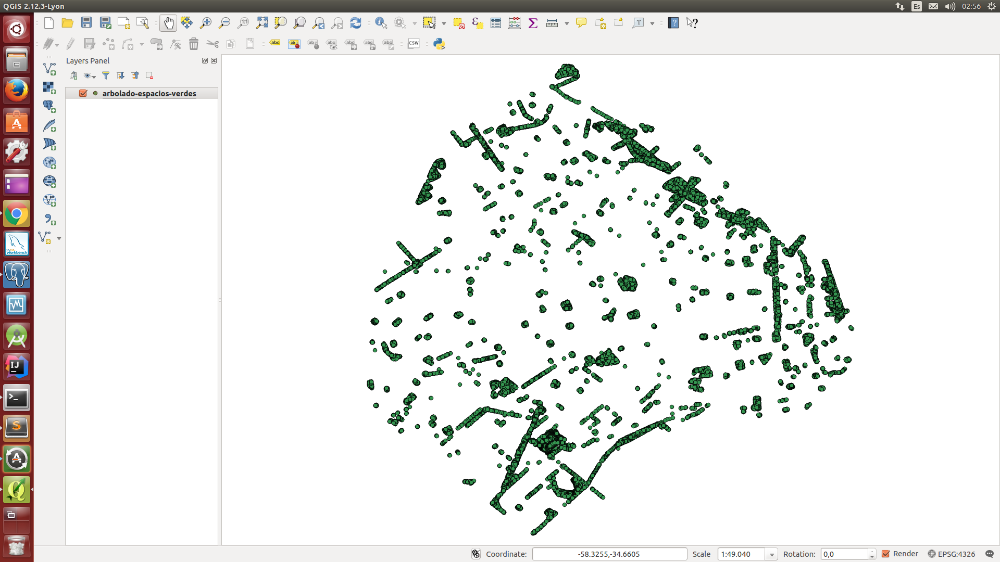

Visualización del arbolado de CABA
El propósito de esta guia es mostrar un método para lograr visualizar la población de las principales especies arbóreas porteñas por barrio, teniendo como fuente de información los datos abiertos proporcionados por el censo de la ciudad
1) bajar datos ofrecidos por el gobierno de la ciudad
arbolado-espacios-verdes.csv y censo-arbolado-2011.csv son los archivos que vamos a utilizar
Estructura de archivos:
arbolado-espacios-verdes(id_arbol; altura_tot; diametro; inclinacion; id_especie; nombre_comun; nombre_cientifico; tipo_follaje; espacio_verde; ubicacion; nombre_familia; nombre_gen; origen; coord_x; coord_y; lat; lon)
censo-arbolado-2011(nombre_barrio; codigo_manzana; alt_ini; alt_fin; calle; coord_x; coord_y; id_especie; nombre_familia; nombre_genero; nombre_cientifico; nombre_comun; tipo_follaje; origen; longitude; latitude; geometry)
TODO: plantear problema de estructuras distintas
2) leer datos desde los archivos y migrarlos a PostgreSQL
Usaremos QGIS para importar los CSVs que hemos bajado. Para lograr esto debemos crear una Layer por archivo. Vamos a Add Delimited Text Layer > Browse... elegimos nuestro archivo, en este caso arbolado-espacios-verdes.csv. Seleccionamos las opciones que aparecen en el siguiente thumbnail:

Vale la pena destacar que usamos ";" como delimitador de campos y que le indicamos a la herramienta que los campos lon y lat deberan ser tomado como (x,y) en el mapa respectivamente. Damos Ok, elegimos el sistema de referencias de coordenas EPSG:4326.

Hacemos lo mismo para el otro archivo, con la salvedad de que esta vez se tomaran longitude y latitude para formar los puntos.
Ahora tenemos que migrar la información que tenemos en las capas a PostgreSQL. Para esto primero debemos crear una conexion con la base. Hacemos click en Add PostGIS Layers > New y elegimos nuestra base. En este caso elegi una que ya tengo, spacial. Es importante tener en cuenta que nuestra base debe tener el plugin postgis. Replicamos como en la siguiente imagen:

Ahora que tenemos nuestra conexión la usaremos para migrar cada una de nuestras campas a la base. Por cada capa se creará una tabla. Ir a Database > DB Manager > DB Manager
Damos Ok, esperamos que QGIS termine de migrar la layer y luego controlamos en la base que se haya dado de alta la tabla con sus tuplas.

Podemos ver que se creó la tabla con el tipo de columna geometry, este tipo de dato es muy práctico para el uso de queries espaciales. Repetimos el mismo procedimiento para la otra layer.
3) crear una tabla unificando la información
Hasta el momento contamos contamos con la información que tenemos en dos tablas distintas. Esto es inconveniente por dos motivos, el primero es que es más complicado realizar queries y el segundo y más importante es que puede haber un mismo árbol cargado en ambas tablas.
dumpeo de consulta a una tabla.